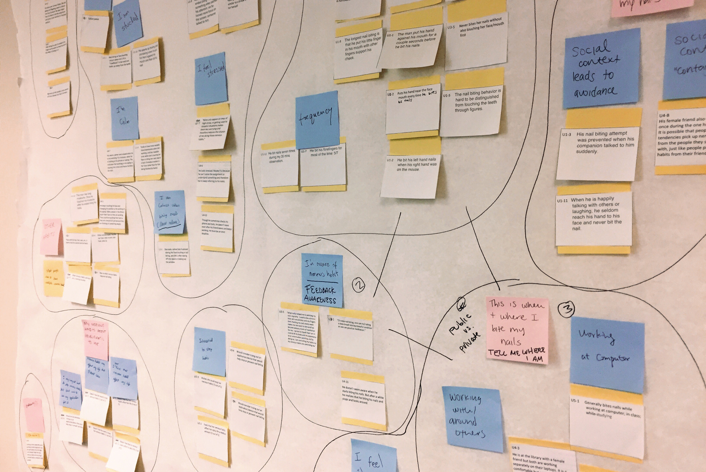
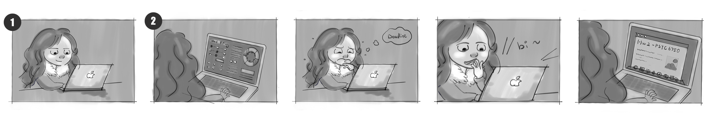
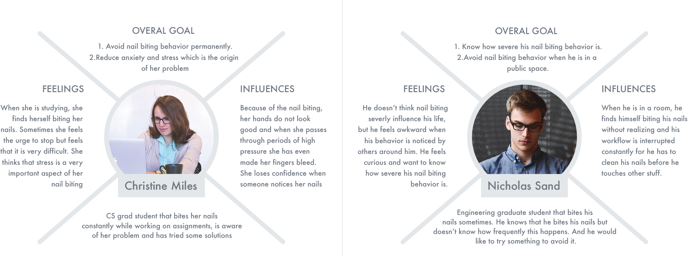
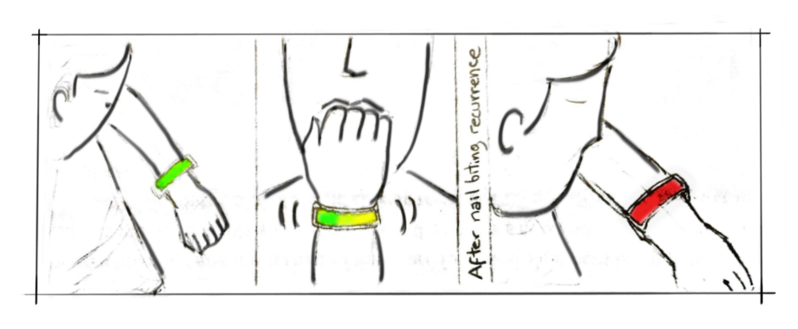
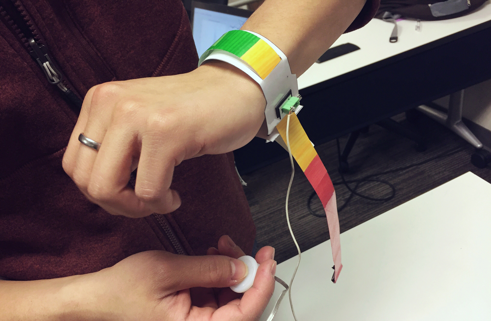
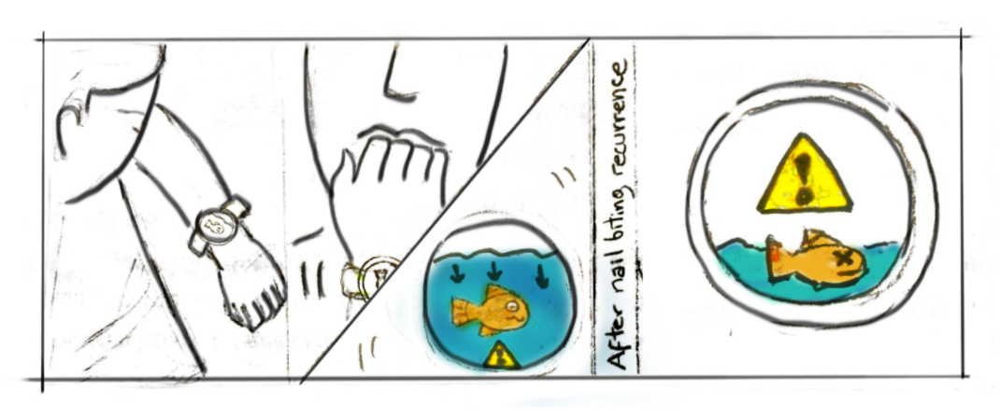

TEAM MEMBERS
Jonathan Camargo | Lyric Liu
Christina Kelley | Mrunmayi Samant
Fish! is an Android Phone Game for Nervous Habbits Treatment.
Our project aims to identify the most common nervous habits that college students suffer from and propose a solution to help them prevent and avoid these habits.
MY ROLE
During the research phase, I took charge in creating the survey and doing ethnographic study. After that, I drew the storyboard of the scenario. I participated throughout the research reflection and helped come up with three possible ideas.Furthermore, I created one low-fidelity prototype and did the user test with my group members. At last, I made illustrations and animations to finalize our the high-fidelity game prototype based on our user feedback.
MOTIVATION
A nervous habit is any repetitive movement or vocalization that a person may perform unconsciously when he or she is nervous or stressed. Nervous habits are repetitive behaviors or unwanted habit actions that can produce self-harming. These conditions trigger during stressful situations and most of the time are unconscious, making the person unable to control their execution. Nervous habits are highly correlated with anxiety, stress, and obsessive-compulsive disorder . One of the more prevalent traits is nail tic disorders; according to Singal, “they are examples of body-focused repetitive behaviors in which there is an irresistible urge or impulse to perform a certain behavior. The behavior is reinforced as it results in some degree of relief and pleasure ”. In extreme cases, nervous habits can qualify as a disorder , but even in non-clinical cases these habits can be problematic for one’s health, career, and day-to-day interactions.
TARGET USERS
Nervous habits are very common, especially in adolescent and young adult populations. In a 1990 study of “purposeless habits” in college students, 63% of respondents reported biting their nails and not a single respondent reported having no such habit .
We focus on students due to the prevalence of nervous habits in this population, and also to the frequent job-searching and interviewing that occurs. Nervous habits can be especially problematic in the workplace and in face-to-face job interviews ; people are often unaware of their own habits (making them hard to avoid or prevent), but interviewers may see them as signs of distraction or insecurity.
RESEARCH
SURVEY
To learn more about our users, we created and disseminated a survey on nervous habits with a combination of closed-format and open-format questions. Our goal was to identify the most common nervous habits, when they are most likely to occur, how students feel about them, and suggestions for prevention and avoidance. The survey allows to determine the perception of nervous habits in the user group to further select one in particular to be the focus or the project. Based on our survey result. We narrowed our nervous behavior to be nail biting which is an annoying habbit that bothers students.

OBSERVATION

We conducted four ethnographic observations with our target users. Observations were done to assess details in the nail biting process and to understand the work environment and the conditions around the user. During the observation, I kept track of the following things with specific time stamps: 1. The nail biting situation; 2. Nail biter’s awareness 3. Detailed behavior of nail biting; 4. Nail biter’s emotion. My notes include “His nail biting attempt was prevented when his companion talked to him suddenly”, “Most of the time he ended biting his nails for something else catches his attention”, etc.
AFFINITY DIAGRAM
We used affinity diagram to organize our ideas and data that collected from our observation, survey and interview. The pink notes consist of:
• Effects of nervous habits.
• This is how I feel when I bite my nails.
• Visual proof of the habit.
• This is who I am around when I do or do not bite my nails.
• This is when and where I bite my nails (Public vs. Private).
ANALYSIS
STORYBOARD
Student works at computer → student gets stressed out about a deadline or something similar → student stops working and bites nails → student returns to working (cyclical)
PERSONA
IMPLICATIONS
• People use their laptop most of the times for studying and working in assignments. This means we can use the laptop as a target device for our solution.
• Some users do not consider that nail biting is a problem that drastically affect their lives, but even if they think that, most of them are willing to try something to reduce it.
• The process of awareness is very important. We detected that people in very social environments are less inclined to bite their nails, so they tend to do it when they feel privacy, even if they are in public environments.
• People have different habits and processes of nail-biting; understanding the physical actions and the affiliated emotions (gleaned from the survey and from observation) will help us best tailor a design to fit user needs.
• Social environment is also very important: students’ feelings, stress, and habits are affected by their friends and others around them. This social context can be both helpful and harmful, depending on the person and the situation.
• We speculate that nail biting can be a way to release stress and anxiety tension. In fact, many survey respondents felt this way, and were interested in addressing the underlying problem of stress rather than just the resulting nervous habit.
• Since some users do not notice the behavior, they don’t realize how frequently they bite their nails and also they are not aware of it every time de do. Since it is something that is not consciously done, it is even harder to quantify by the user.
LOW - FIDELITY PROTOTYPE
PROTOTYPE #1
Our first prototype is a wearable bracelet, with colors and vibrations. It will give quick and instantaneous feedback with vibration whenever the accelerometer and related sensors note that you are in the process of biting your nails. It will also have a band that changes color throughout the day as you bite your nails more, to alert you to how many times that day you have bitten your nails. This combination of Pavlov-esque alert and Fitbit-esque tallying will allow the user to gain awareness about their nail-biting in the moment and track their success in avoiding it as they go about their day.
 The storyboard explains the concept of the bracelet. A user starts the day with green color. When a nail biting episode occurs, the bracelet provides instant haptic feedback using a small vibration motor. The color of the bracelet shifts gradually to yellow and then red according to the recurrence of nail biting.
We constructed the prototype using a colored paper strip and a paper bracelet-look-alike strap. Attached to the bracelet joint we connected a vibration motor using magnet. A battery provided the power to the motor, and in order to emulate the instant feedback we used a switch to activate the vibration.
PROTOTYPE #2
Our second prototype is an Apple or Android watch app. It is a gamified application: you set your upper-limit goal of nail-biting (e.g., I want to bite my nails 10 or fewer times today), and--like the bracelet--the watch sensors note whenever you are biting in your nails. In this case, however, there is an application that gives you feedback and discourages nail-biting. In the goal-driven game, you have a fish in an aquarium. Every time you bite your nails, the water in the fish tank decreases. In order to keep your fish alive, you have to stay under your goal number of nail-bites! The aim here is to use caretaking and gamification to motivate the user to avoid biting their nails.The following storyboard summarizes the concept of the fish game/app.
PROTOTYPE #3
Our final prototype involves a desktop application, as well as a robot head that attaches to the top of your laptop. The application will use image processing to identify if and when you are biting your nails. The physical robot has a face that will give instantaneous feedback based on your nail-biting and lack thereof: a happy face when you aren’t biting your nails, a sad face when you do, and an (adorable) angry face when you continue nail-biting. The accompanying dashboard will house the robot’s virtual body, as well as graphs of your nail-biting over the day/week/month, plus a counter of how many times you have bitten your nails today and how long it has been since you last bit your nails. This combination of instant feedback and historical data will alert you of nail-biting in the moment and hopefully also give you information about when you are most likely to bite your nails, how often you do it, etc. A use case of the desktop application is illustrated in the storyboard below: